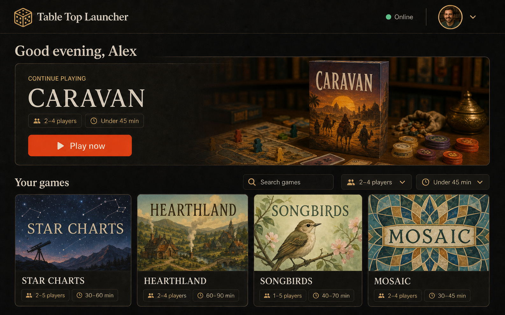
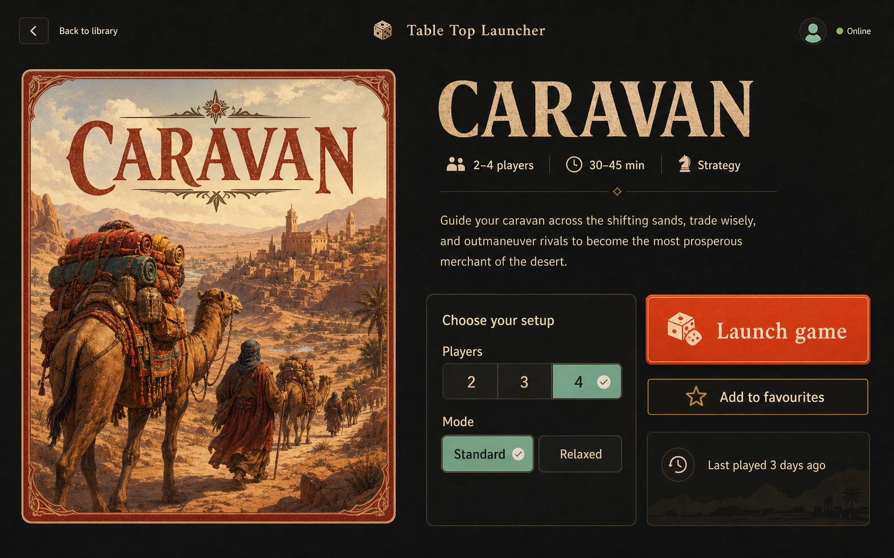
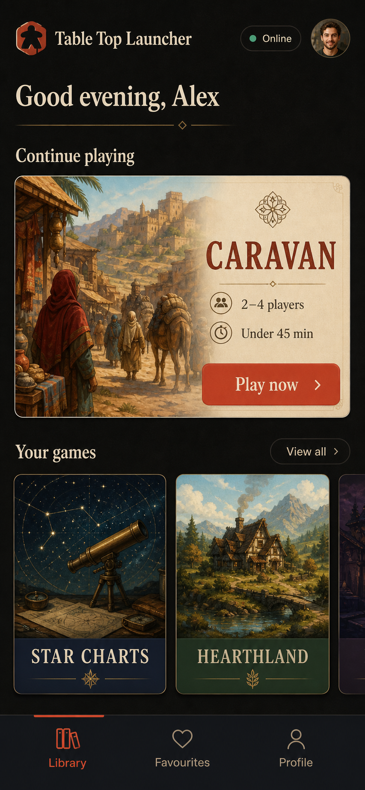

Play before profile
Restore a Firebase session or create a secure guest silently.
Foundation proposal · 2026
A ground-up launcher that keeps the proven Firebase catalogue, removes the account wall, and treats accessible interaction and E2E evidence as product features.
Restore a Firebase session or create a secure guest silently.
Read the existing Applications collection through a safe adapter.
Semantic assertions, screenshots, and walkthroughs stay together.
01 · Desktop library
A recent game leads the scan path. Search and honest metadata filters support larger libraries without turning the launcher into a dashboard.

02 · Game details
Deep-linkable details preserve library context. Setup controls appear only when backed by real data; launch targets are revalidated at use.

03 · Mobile library
Mobile uses honest document scrolling, large targets, safe-area-aware navigation, and a featured action that never hides the library.

Engineering decisions